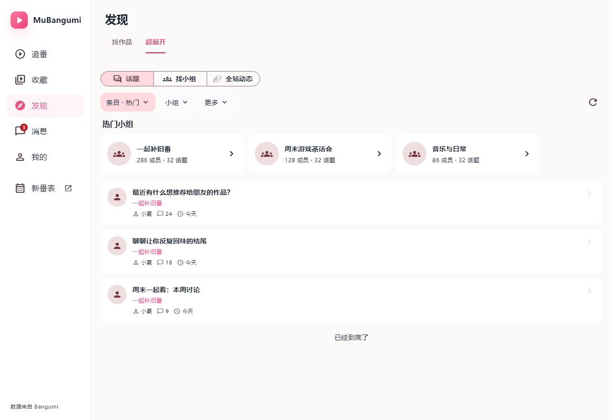

追番收藏 ＋统计发现 ＋超展开消息 聊天 / 小组 / 通知我的 动态 / 日志
个人空间视觉稿 02。封面与头像、个人资料融合，统计收成一行；图标分类栏下是统一字体、间距和互动样式的动态信息流。已启用的自定义背景可作为封面，桌面阅读区同时收窄。发布入口在右下角。
向下浏览动态时，顶部个人信息逐渐淡出并收起，为列表腾出空间；分类切换栏保留，滚回顶部恢复个人信息。
按好友组织私聊。完整好友列表可按昵称与用户名搜索，没聊过的好友也能直接发起私聊；收发记录合并到同一人的入口，非好友历史私信保留在「其他会话」。桌面左右分栏，手机输入栏与发送同排，草稿与原有会话主题保留。
小组像群，每个话题是一场独立讨论。先从已加入的小组进入，首页优先列出讨论；简介和成员信息收起，右下角“发起讨论”。
“发现”负责找作品和找社区。超展开可以找话题、找小组、看全站动态；过长的筛选栏改成分类菜单。
桌面 · 发现 / 超展开查看原图 ↗
同一手机布局以 1.6 倍字体检查：分类仍完整，动态内容继续滚动查看。